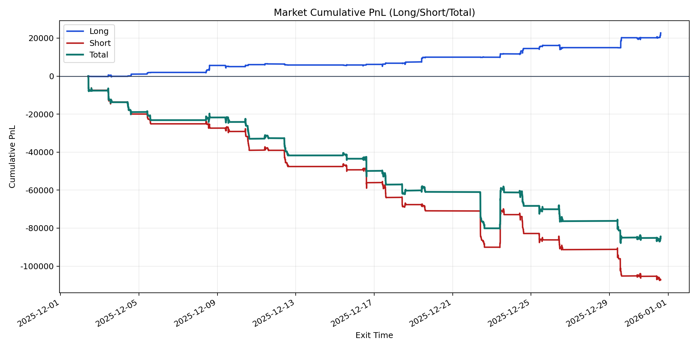
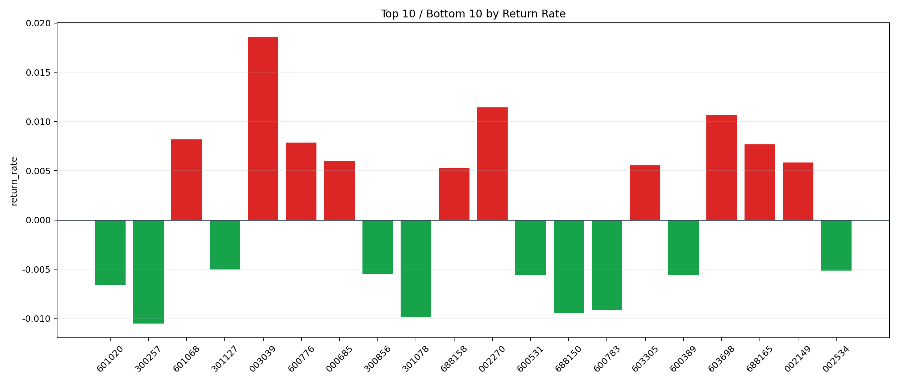

| repo_root | /home/haoranyou/data/output/alpha0.4_1w_5s_3ticks_index_filter/index_weights_1000 |
|---|---|
| period_months | 1 |
| period_label | 2025-12-02_to_2025-12-31 |
| start_time | 2025-12-02 09:53:12 |
| end_time | 2025-12-31 14:45:02 |
| n_trades | 11571 |
| n_symbols | 232 |
| total_pnl | -84430.09139999996 |
| long_total_pnl | 22726.116950000003 |
| short_total_pnl | -107156.20834999997 |
| total_entry_notional | 108728377.0 |
| long_entry_notional | 14965393.0 |
| short_entry_notional | 93762984.0 |
| total_return_rate | -0.0007765230543264705 |
| long_return_rate | 0.0015185780253148048 |
| short_return_rate | -0.001142841276787863 |
| top_symbols_by_return | ["003039", "002270", "603698", "601068", "600776", "688165", "000685", "002149", "603305", "688158"] |
| bottom_symbols_by_return | ["300257", "301078", "688150", "600783", "601020", "600531", "600389", "300856", "002534", "301127"] |

